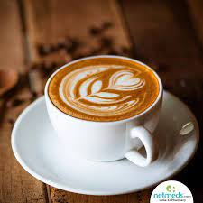

International Coffee Day (1 October) is an occasion that is used to promote and celebrate coffee as a
beverage, with events now occurring in places across the world. A coffee lover could be called a coffee
aficionado, coffeeholic or coffee addict.
Origin of Coffee
Coffee is believed to have originated from Ethiopia as the coffee plant grows there naturally. Around 500 –
800 A.D, the coffee plant was then taken to Yemen by one of the great masters, who was based in the port
city of Mocha.This coffee invasion was the start of the love affair of the western world, where they began
setting up coffee houses for the rich, and it also became the centre of intellectual activities.The most
loved beverage also has beneficial effects. Coffee is naturally rich in antioxidants that can help
rejuvenate your body and well-being. The Green Coffee is believed to help speed up your metabolism and as an
aid to weight loss.
Caffeine is also one of the substances that can be found in these little brown beans, which is the reason
why loads of people (including me) love it.
It’s the side effects of coffee that most of us are after to avoid the sleepiness and sluggish feeling
during daytime or when needed.
World Famous Coffee brands
Turkish Coffee
Turkish coffee is very finely ground coffee brewed by boiling. Any coffee bean
may be used; arabica
varieties are considered best, but robusta or a blend is also used.The coffee grounds are left
in the coffee when served.Coffee and water, usually with added sugar, is brought to the boil in
a special pot called cezve in
Turkey, and often called ibrik elsewhere. As soon as the mixture begins to froth, and before it
boils over, it is taken off the heat; it may be briefly reheated twice more to increase the
desired
froth. The coffee is traditionally served in a small porcelain cup called a kahve fincanı
'coffee cup' Read More>>>
Colombian Coffee
Colombian coffee is coffee that is grown in Colombia. Colombian coffee tends to demand a higher
price because it is mostly made up of the superior arabica variety. Colombian coffees can have
heavy notes of chocolate and nuts, or lighter fruit and floral notes, depending on which
department it's grown. Read More>>>
Old Town White Coffee
OldTown Berhad is Malaysia's largest halal-certified kopi tiam restaurant chain. The company
also manufactures and sells instant beverage products and mixes. Read More>>>
Civet or Luwak Coffee
Kopi luwak is a coffee that consists of partially digested coffee cherries, which have been
eaten and defecated by the Asian palm civet. It is also called civet coffee. The cherries are
fermented as they pass through a civet's intestines, and after being defecated with other fecal
matter, they are collected. Read More>>>
Italian Coffee
Italians are well known for their special attention to the preparation, the selection of the
blends, and the use of accessories when creating many types of coffees. Many of the types of
coffee preparation known today also have their roots here. The main coffee port in Italy is
Trieste where there is also a lot of coffee processing industry. Italian coffee consumption,
often espresso, is highest in the city of Trieste, with an average of 1500 cups of coffee per
person per year. That is about twice as much as is usually drunk in Italy. read More>>>
Coffee Gifts
French Press: A French press is a coffee maker that brews ground coffee and by
steeping it in hot water
and then plunging the mixture to push the grounds out. This pulls more of the flavor out of the coffee
bean
grounds for a high-quality coffee. Grinder: A device that grinds coffee beans before coffee is brewed. Roaster: A device that roasts coffee beans. Home coffee roasters make great gifts for
coffee lovers
because they can get the exact roast they want from the raw beans.
Coffee Beans And Plants
Arabica: Arabica is the coffee plant that creates about 70% of the coffee in the
world, and it has the richer
flavor of the two main coffee plants.
Blends: Coffee beans from multiple places of origin that get mixed together to create
one coffee are known as
blends. Coffee Beans: The beans from which coffee is made. Coffee beans are roasted and ground
before sold to make coffee.
Some coffee drinkers prefer to grind their beans right before brewing the coffee to get the freshest
flavor. Green Coffee Unroasted coffee beans, which are called green because of their green
color. Robusta Coffee Coffee that comes from the robusta coffee plant that grows in
sub-Saharan Africa. This is considered a less high-quality coffee.
Single origin Coffee beans that come from just one origin country.
Coffee Drinks
Name
Description
Image
AFFAGATO A dessert made by pouring espresso over ice cream.
AMERICANO Americano is made by adding hot water to a shot of espresso to create a specialized drink. It may
look simple, but it has a robust flavor.
CAPPUCCINO
Cappuccino is made from espresso, steamed milk and milk foam mixed in equal parts.

COLD BREW A chilled coffee drink made by steeping coarse-ground coffee in water at room temperature for six to
12 hours for a strong coffee.
ESPRESSO A strong black coffee drink made from forcing steam through coffee grounds.
ICED COFFEE This chilled coffee drink typically has a sweet flavor and is poured over ice.